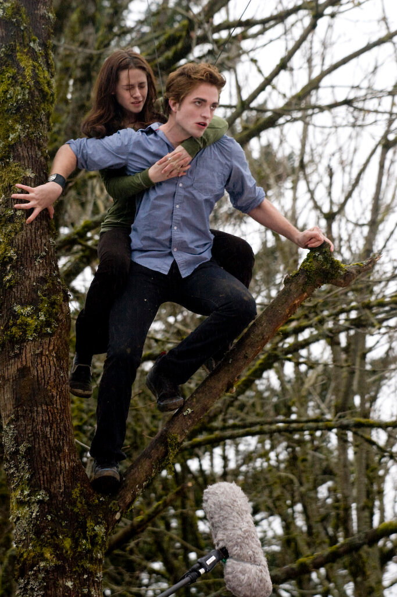
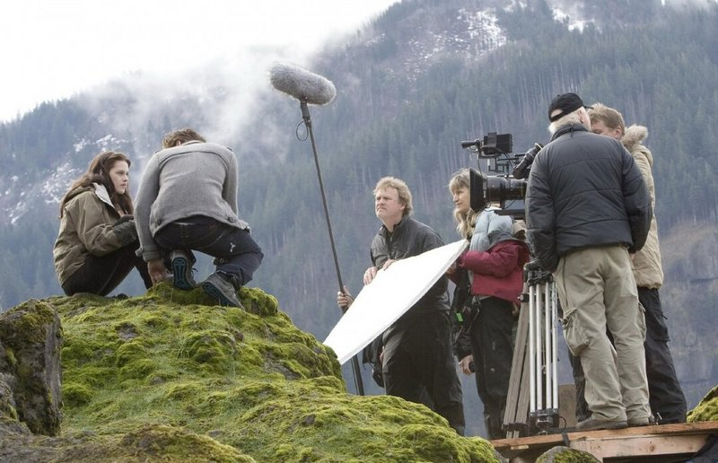
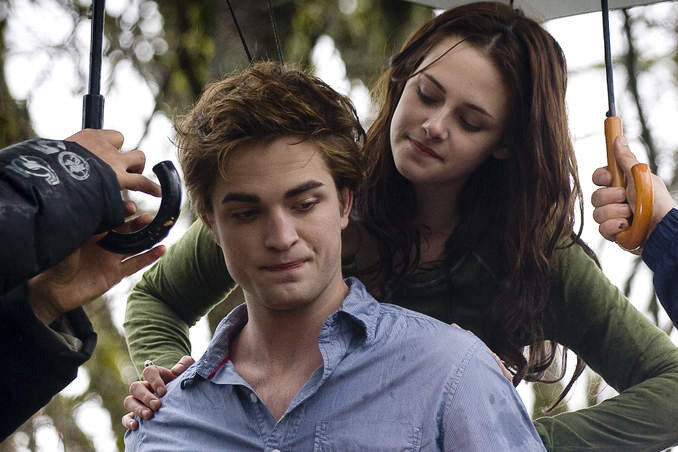
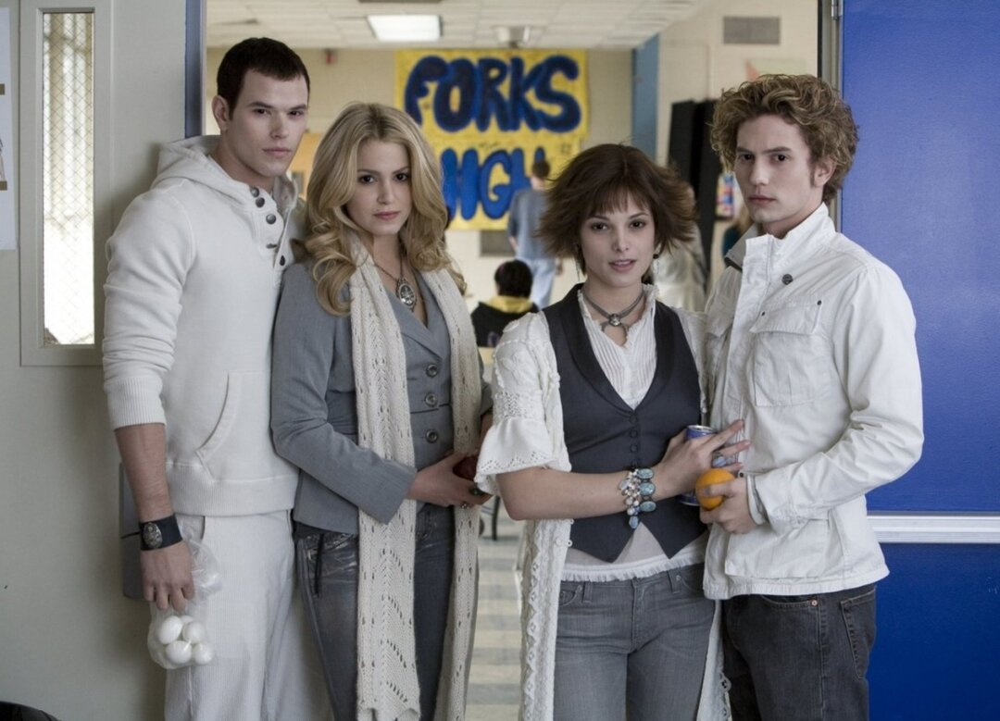
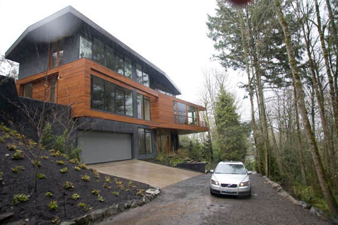
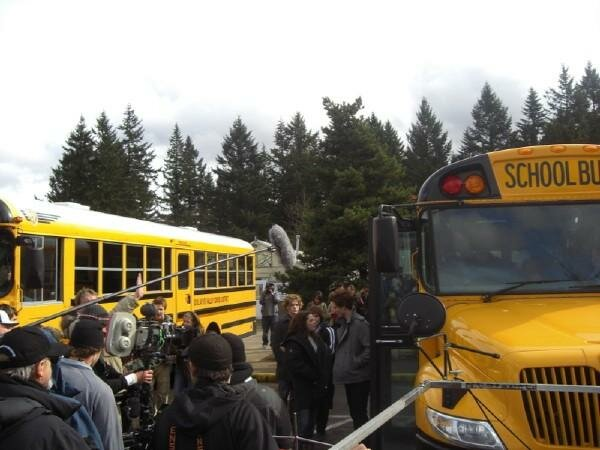
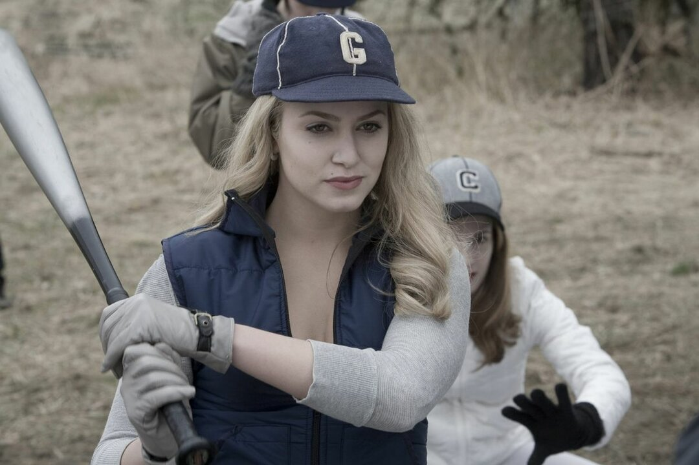
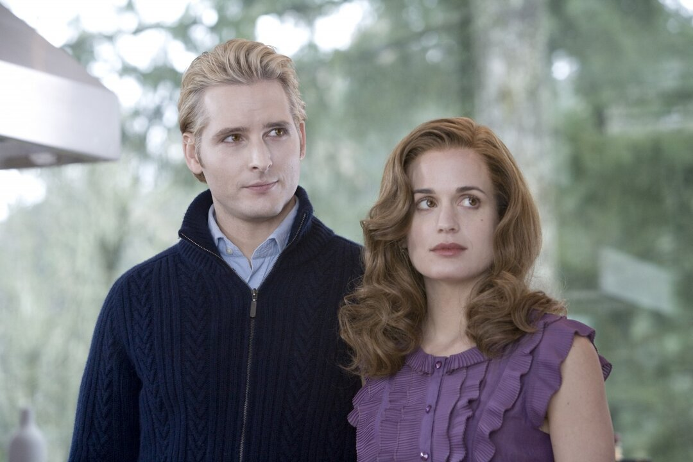

Закулисные истории и скрытые детали создания первой части культовой саги
Фильм, изменивший популярную культуру, создавался в условиях ограниченного бюджета, дождливой погоды и постоянного внимания фанатов. Узнайте, какие секреты скрывает первая часть "Сумерок".

Съемочный процесс (2008)
1
Бюджет в 37 миллионов

Съемки в дождливом Орегоне
Фильм сняли всего за 37 миллионов долларов. Для сравнения, последние части
саги имели бюджет более 100 миллионов. Из-за ограниченных средств съемки
проходили в дождливом Орегоне, а многие "солнечные" сцены создавали
искусственно в павильоне.
2
Паттинсон против грима

Роберт Паттинсон в роли Эдварда
Роберт Паттинсон был так недоволен своим гримом и контактными линзами в первый
день съемок, что хотел отказаться от роли. Актер считал, что выглядит
"как мертвец из плохого фильма ужасов". Режиссеру пришлось его уговаривать.
3
Десятки дублей в столовой

Сцена знакомства в столовой
Сцену знакомства в школьной столовой переснимали десятки раз.
Актриса Эшли Грин позже признавалась, что к концу дня стол был завален
десятками якобы съеденных яблок, а вся команда была измотана.
4
Настоящий дом Калленов

Знаменитый стеклянный дом
Знаменитый стеклянный дом семьи Калленов — реальный частный особняк
в Портленде. Владельцы долго не давали разрешение на съемки, и съемочной
группе разрешили использовать только часть помещений.
5
Фанаты мешали съемкам

Фанаты у съемочной площадки
Во время съемок у школы постоянно толпились сотни фанатов. Они кричали,
просили автографы и пытались сфотографировать актеров. Охране пришлось
устанавливать специальные щиты, чтобы работать в тишине.
6
Саундтрек из iPod

Режиссер Кэтрин Хардуик
Режиссер Кэтрин Хардуик выбрала песню Muse "Supermassive Black Hole"
для сцены бейсбольного матча, включив ее продюсерам со своего iPod.
Так эта композиция попала в фильм.
7
Возрастной парадокс

Сара Кларк и Питер Фачинелли
Актриса Сара Кларк (мама Беллы) на 5 лет младше Питера Фачинелли
(доктор Карлайл Каллен), который по сюжету является вампиром-отцом
ее зятя. Неожиданный кастинговый момент!
Что в итоге?
Эти факты показывают, что даже самый успешный фильм может иметь скромное
начало и сталкиваться с трудностями. "Сумерки" доказали, что важна не
только бюджет, но и идея, команда и преданность своему делу.
7 фактов о культовых "Сумерках"
Закулисные истории и скрытые детали создания первой части культовой саги
Фильм, изменивший популярную культуру, создавался в условиях ограниченного бюджета, дождливой погоды и постоянного внимания фанатов. Узнайте, какие секреты скрывает первая часть "Сумерок".
Съемочный процесс (2008)
Бюджет в 37 миллионов
Съемки в дождливом Орегоне
Фильм сняли всего за 37 миллионов долларов. Для сравнения, последние части саги имели бюджет более 100 миллионов. Из-за ограниченных средств съемки проходили в дождливом Орегоне, а многие "солнечные" сцены создавали искусственно в павильоне.
Паттинсон против грима
Роберт Паттинсон в роли Эдварда
Роберт Паттинсон был так недоволен своим гримом и контактными линзами в первый день съемок, что хотел отказаться от роли. Актер считал, что выглядит "как мертвец из плохого фильма ужасов". Режиссеру пришлось его уговаривать.
Десятки дублей в столовой
Сцена знакомства в столовой
Сцену знакомства в школьной столовой переснимали десятки раз. Актриса Эшли Грин позже признавалась, что к концу дня стол был завален десятками якобы съеденных яблок, а вся команда была измотана.
Настоящий дом Калленов
Знаменитый стеклянный дом
Знаменитый стеклянный дом семьи Калленов — реальный частный особняк в Портленде. Владельцы долго не давали разрешение на съемки, и съемочной группе разрешили использовать только часть помещений.
Фанаты мешали съемкам
Фанаты у съемочной площадки
Во время съемок у школы постоянно толпились сотни фанатов. Они кричали, просили автографы и пытались сфотографировать актеров. Охране пришлось устанавливать специальные щиты, чтобы работать в тишине.
Саундтрек из iPod
Режиссер Кэтрин Хардуик
Режиссер Кэтрин Хардуик выбрала песню Muse "Supermassive Black Hole" для сцены бейсбольного матча, включив ее продюсерам со своего iPod. Так эта композиция попала в фильм.
Возрастной парадокс
Сара Кларк и Питер Фачинелли
Актриса Сара Кларк (мама Беллы) на 5 лет младше Питера Фачинелли (доктор Карлайл Каллен), который по сюжету является вампиром-отцом ее зятя. Неожиданный кастинговый момент!
Что в итоге?
Эти факты показывают, что даже самый успешный фильм может иметь скромное начало и сталкиваться с трудностями. "Сумерки" доказали, что важна не только бюджет, но и идея, команда и преданность своему делу.